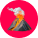

<!DOCTYPE html>
<html>

  <head>
    <meta charset="utf-8" />
    <title>Leaflet Maps with Open Data APIs</title>
    <meta name='viewport' content='initial-scale=1,maximum-scale=1,user-scalable=no' />

    <!-- Load Leaflet, use newest version at http://leafletjs.com -->
    <link rel="stylesheet" href="https://cdnjs.cloudflare.com/ajax/libs/leaflet/1.6.0/leaflet.css" />
    <script src="https://cdnjs.cloudflare.com/ajax/libs/leaflet/1.6.0/leaflet.js"></script>

    <!-- load jQuery, use newest version at https://code.jquery.com   -->
    <script src="https://cdnjs.cloudflare.com/ajax/libs/jquery/3.4.1/jquery.min.js"></script>

    <!-- Load Esri Leaflet, use newest version at http://esri.github.io/esri-leaflet -->
    <script src="https://unpkg.com/esri-leaflet/dist/esri-leaflet.js"></script>

    <!-- style the map -->
    <style>
      body {
        margin: 0;
        padding: 0;
      }
      #map {
        position: absolute;
        height: 100vh;
        width: 100vw;
        top: 0;
        left: 0;
      }
      .leaflet-tooltip {
        max-width: 15rem;
        width: max-content;
        white-space: normal;
      }
    </style>
  </head>

<body>

  <!-- Create div element to house the map -->
  <div id="map"></div>

  <script>
    // Initialize the map with specified center coordinates and zoom level
    // for target area (Hawaii)
    var map = L.map('map', {
      center: [20.61, -157.34],
      zoom: 7,
    })


    // Add Carto baselayer
    var baselayer = new L.tileLayer('https://{s}.basemaps.cartocdn.com/light_all/{z}/{x}/{y}{r}.png', {
      attribution: '&copy; <a href="http://www.openstreetmap.org/copyright">OpenStreetMap</a> contributors, &copy; <a href="http://cartodb.com/attributions">CartoDB</a>'
    }).addTo(map)

    // Add scale
    L.control.scale().addTo(map);


    /*
      Add a legend (checkboxes) to the upper-right corner.
      At first, baselayers and overlays are set to `null` (empty legend).
      We will be adding items to the legend as we load layers.
    */
    var legend = L.control.layers( null, null, {
      position: "topright",
      collapsed: false // false = open by default
    }).addTo(map)


    /*
      Layer 1: Polygons from an Esri MapServer
    
      Uniform seismic hazard model results
      Hosted by an Esri server at https://hifld-geoplatform.hub.arcgis.com/maps/geoplatform::seismic-hazard-model-pga-with-2-5-or-10-probability-in-50-years/about

      Each polygon has a probability value associated with it ('low_cont')
      Let's turn this map into a choropleth by creating breaks and filling the polygons
      based on its seismic hazard value
    */
    var getHazardColor = function(d) {
      return d > 1.5   ? '#7a0177' :
              d > 1.0  ? '#c51b8a' :
              d > 0.5  ? '#f768a1' :
              d > 0.2  ? '#fbb4b9' :
                         '#feebe2'
    }

    var seismicHazardLayer = L.esri.featureLayer({
      url: 'https://services1.arcgis.com/Hp6G80Pky0om7QvQ/ArcGIS/rest/services/Seismic_Ground_Motion_Hazards_with_2_5_or_10_Percent_Probability_in_50_years/FeatureServer/5',
      style: function(feature) {
        return {
          fillOpacity: 0.5,
          weight: 0, // the polygons are quite dense, so let's not draw boundaries
          fillColor: getHazardColor(feature.properties.low_cont)
        }
      }
    }).addTo(map)

    legend.addOverlay(seismicHazardLayer, 'Seismic hazard')


    /*
      Layer 2: Volcanoes
      Add US volcanoes as points from USGS Volcano API
      Source: https://volcanoes.usgs.gov/vsc/api/volcanoApi/

      This API returns a simple JSON array of objects
    */

    $.getJSON('https://volcanoes.usgs.gov/vsc/api/volcanoApi/volcanoesUS', function(apiResults) {

        // Create an empty array to store Lefalet markers
        let volcanoMarkers = [];

        // Let's go through every element of the array returned by the Volcanoes API
        for (var i in apiResults) {

          // Let's only add volcanoes that are located around Hawaii
          if (apiResults[i].subregion === 'Hawaii') {

            // Extract coordinates from the volcano object
            var lat = apiResults[i].latitude;
            var lon = apiResults[i].longitude;

            // Create a Leaflet marker with a custom image
            var marker = L.marker([lat, lon], {
              icon: L.icon({
                iconUrl: 'images/volcano.png',
                iconSize: [24, 24],
                iconAnchor: [12, 12],
                opacity: 0.5
              })
            }).bindTooltip(apiResults[i].vName); // Add a tooltip with volcano name

            // Add our volcano marker to the array of all other markers
            volcanoMarkers.push(marker);

          }
        }

        // Create a Leaflet layer group from array of markers
        var volcanoLayer = L.layerGroup(volcanoMarkers);
        volcanoLayer.addTo(map); // add layer to the map

        // Add layer to the legend, together with the little icon
        legend.addOverlay(
          volcanoLayer,
          'Volcanoes '
        )

      }
    )

    /*
      Layer 3: Hotels with 100+ units
      Source: Hawaii Geospatial Data Portal
      https://geoportal.hawaii.gov/
    */

    var hotelsLayer = L.esri.featureLayer({
      url: 'https://geodata.hawaii.gov/arcgis/rest/services/BusinessEconomy/MapServer/2',
      where: "type = 'HOTEL' and units > 100", // only show large hotels
      pointToLayer: function(feature, latlng) {
        return L.marker(latlng, {
              icon: L.icon({
                iconUrl: 'images/hotel.png',
                iconSize: [16, 16],
                iconAnchor: [8, 8],
                opacity: 0.5
              })
            }).bindTooltip(  // Add a tooltip with hotel name & number of units
              feature.properties.name
              + '<br>'
              + feature.properties.units
              + ' units'
            );
      }
    }).addTo(map)

    legend.addOverlay(
      hotelsLayer,
      'Large hotels '
    )

    </script>
    
  </body>

</html>
